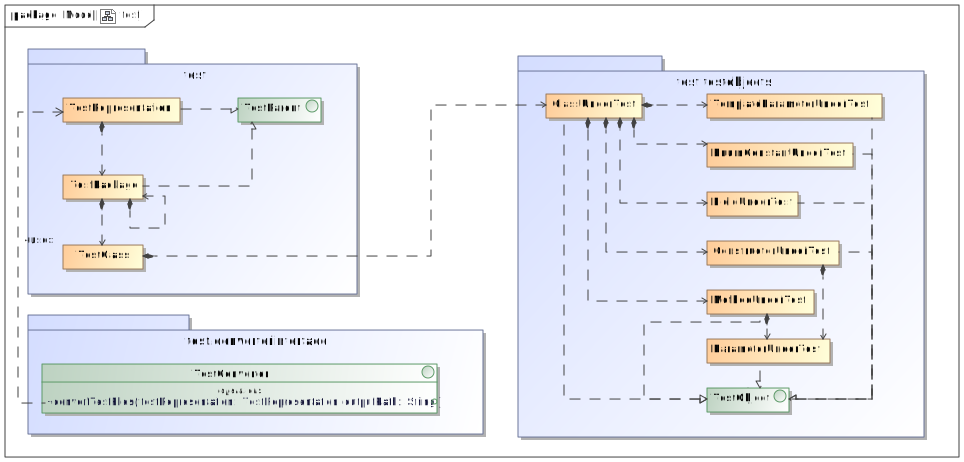

A B C D E F G H I J L M N O P Q R S T U V X Z
All Classes All Packages
All Classes All Packages
All Classes All Packages
T
- templateBinding - Variable in class mdxml.OwnedAttribute
-
The
TemplateBindingof the attribute - TemplateBinding - Class in mdxml
-
Represents a template binding by an
OwnedOperationorPackagedElement - TemplateBinding() - Constructor for class mdxml.TemplateBinding
- TemplateBindingConverter - Class in mdxmlconverter.element
-
Class providing static methods to convert
TemplateBindings ofPackagedElements andOwnedOperations toUmlTemplateBindings - TemplateBindingConverter - Class in umlcodeconverter.element
-
Static class providing methods to convert
UmlTemplateBindings toCodeTemplateBindings.
Since the necessaryCodeTemplateParameters needed for the parameter substitutions of theCodeTemplateBindingmight not be available during the conversion, theCodeTemplateBindings are converted without the parameter substitutions and are stored in a map in aTemporaryModelwith the list ofUmlParameterSubstitutions, which hold references to theUmlTemplateParameters. - TemplateBindingConverter() - Constructor for class mdxmlconverter.element.TemplateBindingConverter
- TemplateBindingConverter() - Constructor for class umlcodeconverter.element.TemplateBindingConverter
- TemplateBindingConverterTest - Class in mdxmlconverter.element
-
Tests the
TemplateBindingConverter - TemplateBindingConverterTest - Class in umlcodeconverter.element
-
Tests the
TemplateBindingConverter. - TemplateBindingConverterTest() - Constructor for class mdxmlconverter.element.TemplateBindingConverterTest
- TemplateBindingConverterTest() - Constructor for class umlcodeconverter.element.TemplateBindingConverterTest
- templateBindings - Variable in class code.CodeConstructor
-
The list of
CodeTemplateBindings of the constructor - templateBindings - Variable in class code.CodeElement
-
The list of
CodeTemplateBindings of the element - templateBindings - Variable in class code.CodeMethod
-
The list of
CodeTemplateBindings of the method - templateBindings - Variable in class mdxml.OwnedOperation
-
The operation's
TemplateBindings - templateBindings - Variable in class mdxml.PackagedElement
-
The list of
TemplateBindings if the packaged element describes a class or an interface - templateBindings - Variable in class uml.UmlElement
-
List of
UmlTemplateBindings of the element - templateBindings - Variable in class uml.UmlOperation
-
List of
UmlTemplateBindings of the operation - templateParameter - Variable in class mdxml.OwnedParameteredElement
-
The id of the
OwnedParameterwhich parameters this element - templateParameter - Variable in class uml.UmlParameterSubstitution
-
The
UmlTemplateParameters replaced by this template binding - TemplateParameterConverter - Class in mdxmlconverter.element
-
Class providing static methods to convert
OwnedTemplateSignatures toUmlTemplateParameters - TemplateParameterConverter - Class in outputjunit.converter
-
Provides a static method to convert
TemplateParameterUnderTesttoJunitTemplateParameterUnderTest. - TemplateParameterConverter - Class in umlcodeconverter.element
-
Provides static methods to convert
UmlTemplateParameters toCodeTemplateParameters and adding them to theCodeParent - TemplateParameterConverter() - Constructor for class mdxmlconverter.element.TemplateParameterConverter
- TemplateParameterConverter() - Constructor for class outputjunit.converter.TemplateParameterConverter
- TemplateParameterConverter() - Constructor for class umlcodeconverter.element.TemplateParameterConverter
- TemplateParameterConverterTest - Class in mdxmlconverter.element
-
Tests the
TemplateParameterConverter. - TemplateParameterConverterTest - Class in outputjunit.converter
- TemplateParameterConverterTest - Class in umlcodeconverter.element
-
Tests
TemplateParameterConverter. - TemplateParameterConverterTest() - Constructor for class mdxmlconverter.element.TemplateParameterConverterTest
- TemplateParameterConverterTest() - Constructor for class outputjunit.converter.TemplateParameterConverterTest
- TemplateParameterConverterTest() - Constructor for class umlcodeconverter.element.TemplateParameterConverterTest
- templateParameterIDs - Variable in class mdxmlconverter.temporary.TemporaryModel
-
A map containing
UmlTemplateParameters and references to their correspondingParameters - templateParameters - Variable in class code.CodeConstructor
-
The list of
CodeTemplateParameters of the constructor - templateParameters - Variable in class code.CodeElement
-
The list of
CodeTemplateParameters of the element - templateParameters - Variable in class code.CodeMethod
-
The list of
CodeTemplateParameters of the method - templateParameters - Variable in class junit.JunitTestClass
-
List of
JunitTemplateParameterUnderTestwhich should be checked - templateParameters - Variable in class test.testobjects.ClassUnderTest
-
A list of
TemplateParameterUnderTestof the class under test. - templateParameters - Variable in class uml.UmlElement
-
List of
UmlTemplateParameters of the element - templateParameters - Variable in class uml.UmlOperation
-
List of
UmlTemplateParameters of the operation - TemplateParameterUnderTest - Class in test.testobjects
-
Represents a template parameter of a
ClassUnderTest - TemplateParameterUnderTest(String, String, ClassUnderTest) - Constructor for class test.testobjects.TemplateParameterUnderTest
-
Constructor with parameter name and bounded type.
- TemplateParameterUnderTestConverter - Class in codetestconverter.testclass
-
Provides a static method to convert
CodeTemplateParameters of a givenCodeElementtoTemplateParameterUnderTestand adding them to aClassUnderTest. - TemplateParameterUnderTestConverter() - Constructor for class codetestconverter.testclass.TemplateParameterUnderTestConverter
- TemporaryAttribute - Class in mdxmlconverter.temporary
-
TemporaryAttribute extends the
UmlAttributewith additional fields for the 'association' and 'aggregation' attributes of theOwnedAttribute - TemporaryAttribute(String, UmlVisibility, String, boolean, boolean, String, UmlMultiplicityValue, UmlMultiplicityValue, String, String) - Constructor for class mdxmlconverter.temporary.TemporaryAttribute
-
Constructor extending the
UmlAttributeconstructor with association and aggregation - TemporaryModel - Class in codetestconverter.temporary
-
Auxiliary class providing a map of
CodePackages and convertedTestPackages to be used byTestClassConverter.convertTestClasses(codetestconverter.temporary.TemporaryModel). - TemporaryModel - Class in mdxmlconverter.temporary
-
Auxiliary class managing references of
UmlElements,UmlTemplateParameters,UmlRelationships,UmlAttributes andUmlParameters
These references are used for the replacement with the actual elements - TemporaryModel - Class in outputjunit.converter.temporary
-
Auxiliary class providing a map of
TestPackages and convertedJunitPackages to be used byTestClassConverter.convertTestClasses(junit.JunitRepresentation, outputjunit.converter.temporary.TemporaryModel). - TemporaryModel - Class in umlcodeconverter.temporary
-
Auxiliary class providing a map of incompletely converted
CodeTemplateBindings as value and a list ofUmlParameterSubstitutions as value, and the map ofUmlTemplateParameters as key andCodeTemplateParameters as value.
Furthermore, this class holds a map ofUmlPackageandCodePackages to be used by theElementConverter, as well as a map ofUmlElements andCodeElements to be used by theRelationshipConverter - TemporaryModel() - Constructor for class codetestconverter.temporary.TemporaryModel
-
Constructor, initializes the map of
CodePackages andTestPackages. - TemporaryModel() - Constructor for class mdxmlconverter.temporary.TemporaryModel
-
Constructor, initializes classes' maps and lists
- TemporaryModel() - Constructor for class outputjunit.converter.temporary.TemporaryModel
-
Constructor, initializes the map of
TestPackages andJunitPackages. - TemporaryModel() - Constructor for class umlcodeconverter.temporary.TemporaryModel
-
Constructor, initializing the map of incompletely converted template bindings, converted template parameters, converted packages and converted elements
- TemporaryRelationship - Class in mdxmlconverter.temporary
-
Auxiliary class extending the
UmlRelationshipwith references to the client element and supplier element since the resolving of all references is only possible after allUmlElements have been converted - TemporaryRelationship() - Constructor for class mdxmlconverter.temporary.TemporaryRelationship
-
Default constructor
- TemporaryRelationship(String, String, UmlRelationshipType) - Constructor for class mdxmlconverter.temporary.TemporaryRelationship
-
Constructor with references to client and supplier elements and an
UmlRelationshipTypeif the relationship is a generalization, interface realization or dependency - TemporaryRelationship(MemberEnd, MemberEnd) - Constructor for class mdxmlconverter.temporary.TemporaryRelationship
-
Constructor with two
MemberEndif the relationship is an undirected association - TemporaryRelationship(MemberEnd, MemberEnd, OwnedEnd) - Constructor for class mdxmlconverter.temporary.TemporaryRelationship
- TemporaryTemplateBinding - Class in mdxmlconverter.temporary
-
Extends the
UmlTemplateBindingwith a map containing references to theUmlTemplateParameterand type of theUmlTemplateBindings parameter substitution - TemporaryTemplateBinding() - Constructor for class mdxmlconverter.temporary.TemporaryTemplateBinding
-
Default constructor, initializes the parameter substitution map
- temporaryTemplateBindings - Variable in class umlcodeconverter.temporary.TemporaryModel
-
The map containing incompletely converted
UmlTemplateBindings as key and a list ofUmlParameterSubstitutions as value - test - package test
-
This package contains all model classes of the test representation.
 - test.converterinterface - package test.converterinterface
- test.testobjects - package test.testobjects
- testAccessModifier() - Method in class mdxmlconverter.element.ModifierConverterTest
- testAddTestCreatorOptions() - Method in class core.options.TestCreatorTest
- testArbitraryRelationship() - Method in class mdxmlconverter.relationship.AssociationTypeConverterTest
-
Tests whether
AssociationTypeConverterreturnsUmlRelationshipType.ASSOCIATIONfor an arbitrary input string'. - testAttributeConverter() - Method in class mdxmlconverter.element.AttributeConverterTest
- TestClass - Class in test
-
Represents a test class, containing a
ClassUnderTestwhich is tested by this class - TestClass() - Constructor for class test.TestClass
- TestClassConverter - Class in codetestconverter.testclass
-
Provides static methods to convert
CodeElements of theCodePackages in theTemporaryModeltoTestClasses. - TestClassConverter - Class in outputjunit.converter
-
Provides static methods to convert
TestClasses of theTestPackages in theTemporaryModeltoJunitTestClasses. - TestClassConverter() - Constructor for class codetestconverter.testclass.TestClassConverter
- TestClassConverter() - Constructor for class outputjunit.converter.TestClassConverter
- TestClassConverterTest - Class in codetestconverter.testclass
- TestClassConverterTest - Class in outputjunit.converter
-
Tests
TestClassConverter - TestClassConverterTest() - Constructor for class codetestconverter.testclass.TestClassConverterTest
- TestClassConverterTest() - Constructor for class outputjunit.converter.TestClassConverterTest
- testClasses - Variable in class junit.JunitPackage
-
List of
JunitTestClasses of the package - testClasses - Variable in class test.TestPackage
-
The list of
TestClasses of the package - testCodeTestConverter() - Method in class codetestconverter.CodeTestConverterTest
-
Checks if
CodeTestConverter.convertCodeToTestRepresentation(code.CodeRepresentation)assigns the name of theCodeRepresentationto theTestRepresentation. - testCompositeRelationship() - Method in class mdxmlconverter.relationship.AssociationTypeConverterTest
-
Tests whether
AssociationTypeConverterreturnsUmlRelationshipType.COMPOSITIONfor input string 'composite'. - testConstructorConverter() - Method in class umlcodeconverter.element.ConstructorConverterTest
- testConvertClass() - Method in class outputjunit.converter.TestClassConverterTest
- testConvertClasses() - Method in class outputjunit.converter.TestClassConverterTest
- testConvertConstructors() - Method in class outputjunit.converter.ConstructorConverterTest
- testConvertDataTypeWithActual() - Method in class mdxmlconverter.element.DataTypeConverterTest
- testConvertDataTypeWithDataType() - Method in class mdxmlconverter.element.DataTypeConverterTest
- testConvertDataTypeWithElementReference() - Method in class mdxmlconverter.element.DataTypeConverterTest
-
Tests
DataTypeConverter.convertDataType(java.lang.String, mdxml.DataType)with an element reference string. - testConvertElementID() - Method in class mdxmlconverter.element.DataTypeConverterTest
- testConvertElements() - Method in class umlcodeconverter.element.ElementConverterTest
- TestConverter - Interface in test.converterinterface
-
This interface has to be implemented by every output converter.
- testConvertFields() - Method in class outputjunit.converter.FieldConverterTest
- testConvertLiterals() - Method in class mdxmlconverter.element.LiteralConverterTest
-
Tests
LiteralConverter. - testConvertMethods() - Method in class outputjunit.converter.MethodConverterTest
- testConvertPackage() - Method in class outputjunit.converter.PackageConverterTest
- testConvertPackagedElement() - Method in class mdxmlconverter.MdxmlUmlConverterTest
- testConvertPackages() - Method in class outputjunit.converter.PackageConverterTest
- testConvertParameterSubstitutionID() - Method in class mdxmlconverter.element.TemplateBindingConverterTest
- testConvertParametersWithConstructor() - Method in class umlcodeconverter.element.ParameterConverterTest
-
Tests
ParameterConverter.convertParameters(uml.UmlOperation, code.CodeMethod)with a constructor - testConvertParametersWithOperation() - Method in class umlcodeconverter.element.ParameterConverterTest
- testConvertRelationshipAssociation() - Method in class mdxmlconverter.relationship.RelationshipConverterTest
-
Tests
RelationshipConverter.convertRelationship(mdxml.PackagedElement, mdxmlconverter.temporary.TemporaryModel)with an association. - testConvertRelationshipDependency() - Method in class mdxmlconverter.relationship.RelationshipConverterTest
-
Tests
RelationshipConverter.convertRelationship(mdxml.PackagedElement, mdxmlconverter.temporary.TemporaryModel)with a relationship. - testConvertRelationshipOther() - Method in class mdxmlconverter.relationship.RelationshipConverterTest
-
Tests
RelationshipConverter.convertRelationship(mdxml.PackagedElement, mdxmlconverter.temporary.TemporaryModel)with an invalid type. - testConvertTemplateBindingsWithElement() - Method in class mdxmlconverter.element.TemplateBindingConverterTest
- testConvertTemplateBindingsWithOperation() - Method in class mdxmlconverter.element.TemplateBindingConverterTest
- testConvertTemplateParameter() - Method in class umlcodeconverter.element.TemplateParameterConverterTest
- testConvertTemplateParameters() - Method in class outputjunit.converter.TemplateParameterConverterTest
- testConvertTemplateParameters() - Method in class umlcodeconverter.element.TemplateParameterConverterTest
- testConvertTemplateParametersElement() - Method in class mdxmlconverter.element.TemplateParameterConverterTest
- testConvertTemplateParametersModel() - Method in class mdxmlconverter.element.TemplateParameterConverterTest
- testConvertTemplateParametersOperation() - Method in class mdxmlconverter.element.TemplateParameterConverterTest
- testConvertTemporaryDependency() - Method in class mdxmlconverter.relationship.RelationshipConverterTest
- testConvertTemporaryDirectedAssociation() - Method in class mdxmlconverter.relationship.RelationshipConverterTest
-
Tests
RelationshipConverter.convertTemporaryRelationship(mdxmlconverter.temporary.TemporaryRelationship, mdxmlconverter.temporary.TemporaryModel)with a directed association. - testConvertTemporaryTemplateBindings() - Method in class mdxmlconverter.element.TemplateBindingConverterTest
- testConvertTemporaryUndirectedComposition() - Method in class mdxmlconverter.relationship.RelationshipConverterTest
-
Tests
RelationshipConverter.convertTemporaryRelationship(mdxmlconverter.temporary.TemporaryRelationship, mdxmlconverter.temporary.TemporaryModel)with a undirected composition. - testConvertTestFiles() - Method in class outputjunit.OutputJunitConverterTest
- testConvertTestToJunitRepresentation() - Method in class outputjunit.OutputJunitConverterTest
- testConvertTopLevelPackagedClass() - Method in class mdxmlconverter.MdxmlUmlConverterTest
-
Tests
MdxmlUmlConverter.convertPackagedElement(mdxml.PackagedElement, mdxmlconverter.temporary.TemporaryModel, uml.UmlParent)with anUmlModelas parent and aPackagedElementrepresenting a class. - testConvertTopLevelPackagedDependency() - Method in class mdxmlconverter.MdxmlUmlConverterTest
-
Tests
MdxmlUmlConverter.convertPackagedElement(mdxml.PackagedElement, mdxmlconverter.temporary.TemporaryModel, uml.UmlParent)with anUmlModelas parent and aPackagedElementrepresenting a dependency. - testConvertToUmlRepresentation() - Method in class mdxmlconverter.MdxmlUmlConverterTest
-
Tests whether
MdxmlUmlConverter.convertToUmlRepresentation(java.lang.String)assigns the correct name to the convertedUmlModel. - testCreateConstructorAssertions() - Method in class outputjunit.converter.AssertionConverterTest
- testCreateConstructorParameters() - Method in class outputjunit.converter.ParameterConverterTest
- testCreateDirectories() - Method in class outputjunit.files.FileDirectoryCreatorTest
- testCreateEnumConstantAssertions() - Method in class outputjunit.converter.AssertionConverterTest
- testCreateFieldAssertions() - Method in class outputjunit.converter.AssertionConverterTest
- testCreateMethodAssertions() - Method in class outputjunit.converter.AssertionConverterTest
- testCreateMethodParameters() - Method in class outputjunit.converter.ParameterConverterTest
- testCreateParameter() - Method in class umlcodeconverter.element.ParameterConverterTest
- testCreateParameterTypeClasses() - Method in class outputjunit.converter.ParameterConverterTest
- testCreateParameterTypes() - Method in class outputjunit.converter.ParameterConverterTest
- testCreatePropertyAssertions() - Method in class outputjunit.converter.AssertionConverterTest
- testCreateRelationshipAssertions() - Method in class outputjunit.converter.AssertionConverterTest
- testCreateTemplateParameterAssertions() - Method in class outputjunit.converter.AssertionConverterTest
- testCreateTestFiles() - Method in class outputjunit.files.TestFileCreatorTest
- TestCreator - Class in core.options
-
Contains the functions necessary to process CLI commands for the test file creation
- TestCreator() - Constructor for class core.options.TestCreator
- TestCreatorTest - Class in core.options
-
Tests
TestCreator - TestCreatorTest() - Constructor for class core.options.TestCreatorTest
- testDependencyConversion() - Method in class mdxmlconverter.relationship.DependencyConverterTest
-
Tests
DependencyConverter.convertDependency(mdxml.PackagedElement, mdxmlconverter.temporary.TemporaryModel)with the given mock elements. - testDirectedRelationshipConversion() - Method in class mdxmlconverter.relationship.AssociationConverterTest
-
Tests
AssociationConverter.convertAssociation(mdxml.PackagedElement, mdxmlconverter.temporary.TemporaryModel)with an directed relationship. - testDirectory - Variable in class outputjunit.OutputJunitConverterTests
-
The directory path to be used in the tests.
- testElementConverter() - Method in class umlcodeconverter.element.ElementConverterTest
- testElementConverterWithClass() - Method in class mdxmlconverter.element.ElementConverterTest
- testElementConverterWithEnumeration() - Method in class mdxmlconverter.element.ElementConverterTest
- testElementConverterWithInterface() - Method in class mdxmlconverter.element.ElementConverterTest
- testEvaluateArguments() - Method in class core.options.TestCreatorTest
- testFieldConverter() - Method in class umlcodeconverter.element.FieldConverterTest
- TestFileCreator - Class in outputjunit.files
-
Provides static methods the generate test class file out of the mustache template
- TestFileCreator() - Constructor for class outputjunit.files.TestFileCreator
- TestFileCreatorTest - Class in outputjunit.files
-
Tests
TestFileCreator - TestFileCreatorTest() - Constructor for class outputjunit.files.TestFileCreatorTest
- testFinishTemplateBindingConversion() - Method in class umlcodeconverter.element.TemplateBindingConverterTest
- testGeneralizationConverterWithClasses() - Method in class umlcodeconverter.relationship.GeneralizationConverterTest
- testGeneralizationConverterWithInterfaces() - Method in class umlcodeconverter.relationship.GeneralizationConverterTest
- testGeneralizationConverterWithModel() - Method in class mdxmlconverter.relationship.GeneralizationConverterTest
- testGeneralizationConverterWithPackage() - Method in class mdxmlconverter.relationship.GeneralizationConverterTest
- testGetOperationReturnParameter() - Method in class umlcodeconverter.element.MethodConverterTest
- testGetQualifiedName() - Method in class junit.JunitPackageTest
- testGetTestClassesAsList() - Method in class junit.JunitPackageTest
- testGetTestClassesAsList() - Method in class junit.JunitRepresentationTest
- TestInitializer - Class in junit
-
Provides mock elements and an initialization method.
Must be extended by all test classes of this package. - TestInitializer - Class in umlcodeconverter.element
- TestInitializer() - Constructor for class junit.TestInitializer
- TestInitializer() - Constructor for class umlcodeconverter.element.TestInitializer
- testInputParameterConverter() - Method in class mdxmlconverter.element.ParameterConverterTest
-
Tests
ParameterConverter.convertParameters(mdxml.OwnedOperation, uml.UmlOperation, mdxmlconverter.temporary.TemporaryModel)with an input parameter. - testInterfaceRealizationConverter() - Method in class umlcodeconverter.relationship.InterfaceRealizationTest
- testInterfaceRealizationConverterWithModel() - Method in class mdxmlconverter.relationship.InterfaceRealizationConverterTest
- testInterfaceRealizationConverterWithPackage() - Method in class mdxmlconverter.relationship.InterfaceRealizationConverterTest
- testLiteralConverter() - Method in class umlcodeconverter.element.LiteralConverterTest
- testMethodConverter() - Method in class umlcodeconverter.element.MethodConverterTest
- testModifierValueConversion() - Method in class umlcodeconverter.element.ModifierConverterTest
- testNestedElementConverter() - Method in class mdxmlconverter.element.NestedElementConverterTest
- testNestedGeneralizationConverter() - Method in class mdxmlconverter.relationship.GeneralizationConverterTest
- testNestedInterfaceRealizationConverter() - Method in class mdxmlconverter.relationship.InterfaceRealizationConverterTest
- testNonAccessModifier() - Method in class mdxmlconverter.element.ModifierConverterTest
- TestObject - Interface in test.testobjects
-
Interface implemented by all elements under test.
- testOperationConverter() - Method in class mdxmlconverter.element.OperationConverterTest
- TestPackage - Class in test
-
Represents a package which contains several
TestClasses - TestPackage(String, TestParent) - Constructor for class test.TestPackage
- testPackageConversion() - Method in class codetestconverter.packages.CodePackageTest
- testPackageConverter() - Method in class mdxmlconverter.packages.PackageConverterTest
-
Tests the
PackageConverter.convertPackage(mdxml.PackagedElement)method. - testPackageConverter() - Method in class umlcodeconverter.packages.PackageConverterTest
- TestPackageTest - Class in test
-
Tests the
TestPackage.getQualifiedName()method - TestPackageTest() - Constructor for class test.TestPackageTest
- testParameterDirectionConverter() - Method in class mdxmlconverter.element.ParameterDirectionConverterTest
- TestParent - Interface in test
-
Interface implemented by the classes of the model to reference a parent class, provides a method the get its name
- testParseOptions() - Method in class core.options.TestCreatorTest
- testQualifiedName() - Method in class test.TestPackageTest
-
Tests the
TestPackage.getQualifiedName()method - testRelationshipConverter() - Method in class umlcodeconverter.relationship.RelationshipConverterTest
-
Tests
RelationshipConverter.convertRelationships(java.util.ArrayList<uml.UmlRelationship>, umlcodeconverter.temporary.TemporaryModel)with a class generalization and and interface realization with aCodeEnumerationas client. - TestRepresentation - Class in test
-
Represents the root class of the test representation which has the project name as name and a list of
TestPackages. - TestRepresentation(String) - Constructor for class test.TestRepresentation
-
Constructor with name, initializes the list of
TestPackages - testResolveDataTypeReferences() - Method in class mdxmlconverter.MdxmlUmlConverterTest
- testReturnParameterConverter() - Method in class mdxmlconverter.element.ParameterConverterTest
-
Tests
ParameterConverter.convertParameters(mdxml.OwnedOperation, uml.UmlOperation, mdxmlconverter.temporary.TemporaryModel)with a return parameter. - testSharedRelationship() - Method in class mdxmlconverter.relationship.AssociationTypeConverterTest
-
Tests whether
AssociationTypeConverterreturnsUmlRelationshipType.AGGREGATIONfor input string 'shared'. - testShowInputs() - Method in class core.options.TestCreatorTest
-
Tests
TestCreator.showInputs() - testShowOutputs() - Method in class core.options.TestCreatorTest
- testTemplateBindingConverter() - Method in class umlcodeconverter.element.TemplateBindingConverterTest
- testTestClassConverter() - Method in class codetestconverter.testclass.TestClassConverterTest
- testUmlCodeConverter() - Method in class umlcodeconverter.UmlCodeConverterTest
-
Checks if
UmlCodeConverter.convertUmlToCodeRepresentation(uml.UmlModel)assigns the name of theUmlModelto theCodeRepresentation. - testUndirectedRelationshipConversion() - Method in class mdxmlconverter.relationship.AssociationConverterTest
-
Tests
AssociationConverter.convertAssociation(mdxml.PackagedElement, mdxmlconverter.temporary.TemporaryModel)with an undirected relationship. - tmpModel - Variable in class outputjunit.converter.TestClassConverterTest
-
Mocks a
TemporaryModelto be used in the tests. - type - Variable in class code.CodeField
-
The data type of the field
- type - Variable in class code.CodeParameter
-
The data type of the parameter
- type - Variable in class code.CodeTemplateParameter
-
The constraining type of the template parameter Is 'java.lang.Object' if there is no constrain
- type - Variable in class junit.JunitFieldUnderTest
-
The type of the field
- type - Variable in class mdxml.DefaultValue
-
The type of the default value
- type - Variable in class mdxml.LowerValue
-
The type of the value
- type - Variable in class mdxml.PackagedElement
-
The type of the element
- type - Variable in class mdxml.UpperValue
-
The type of the value
- type - Variable in class test.testobjects.ClassUnderTest
-
The
ClassUnderTest.ClassUnderTestTypeof the class under test. - type - Variable in class test.testobjects.FieldUnderTest
-
The fully qualified name of the type of the field under test.
- type - Variable in class test.testobjects.ParameterUnderTest
-
The fully qualified name of the type of the parameter under test.
- type - Variable in class uml.UmlAttribute
-
The data type of the attribute
- type - Variable in class uml.UmlParameter
-
The data type of the parameter
- type - Variable in class uml.UmlRelationship
-
The type of the relationship
- type - Variable in class uml.UmlTemplateParameter
-
The constraining type of the template parameter Is 'java.lang.Object' if there is no constrain
All Classes All Packages